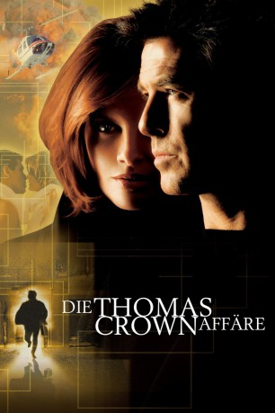

#3859 Die Thomas Crown Affäre
Alternativ: The Thomas Crown Affair
 
 IMDB-Wertung: 6.8 / 10
IMDB-Wertung: 6.8 / 10  Metascore: 0
Metascore: 0 
Der smarte, erfolgsverwöhnte Millionär Thomas Crown sucht den ständigen Nervenkitzel. Als ihm sein geregeltes Leben wieder mal zu langweilig wird, landet er einen grandiosen Coup: Auf elegante Weise stiehlt er am helllichen Tag das teuerste Gemälde aus einem schwer bewachten New Yorker Museum. Seine Gegenspielerin ist nicht weniger gerissen: Die attraktive und erfolgshungrige Versicherungsagentin Catherine Banning hat bislang noch jeden Betrüger zur Strecke gebracht. Schnell spüren die beiden Gegenspieler, dass sie auf der selben Wellenlänge liegen. Es beginnt ein leidenschaftliches und gefährliches Katz-und-Maus-Spiel mit doppeltem Boden und verbl��ffenden Wendung.
Jahr: 1999
Dauer: 113 Minuten
FSK: 6
Land: USA Studio: MGMTonspuren: DTS - ,
Untertitel: Deutsch, Englisch,
Auflösung: 720p (1280x544) Größe: 5099 MB
Genre: Thriller, Krimi, Liebe
Regisseur:  John McTiernan
John McTiernan
Drehbuch: James Gunn
Soundtrack:
Darsteller:
 Pierce Brosnan als Thomas Crown
Pierce Brosnan als Thomas Crown Rene Russo als Catherine Banning
Rene Russo als Catherine Banning Denis Leary als Michael McCann
Denis Leary als Michael McCann Ben Gazzara als Andrew Wallace
Ben Gazzara als Andrew Wallace Frankie Faison als Detective Paretti
Frankie Faison als Detective Paretti- Fritz Weaver als John Reynolds
- Charles Keating als Friedrich Golchan
 Mark Margolis als Heinrich Knutzhorn
Mark Margolis als Heinrich Knutzhorn Faye Dunaway als The Psychiatrist
Faye Dunaway als The Psychiatrist- Robert D. Novak als Proctor
 James Saito als Paul Cheng
James Saito als Paul Cheng- Esther Cañadas als Anna Knudsen
 Ritchie Coster als Janos
Ritchie Coster als Janos Gregg Bello als Iggy
Gregg Bello als Iggy George Christy als Senior Museum Guard
George Christy als Senior Museum Guard John Elsen als New York City Cop
John Elsen als New York City Cop- Robert Spillane als Crown Acquisitions Security Officer
- Cynthia Darlow als Daria, Crown's Secretary
- Jane DeNoble als Crown Acquisitions Employee
- Ryan Hecht als Crown Acquisitions Employee
 Tom Tammi als Businessman
Tom Tammi als Businessman- Mark Zeisler als Bulldog
- James Yaegashi als Crown Acquisitions Executive
- Melissa Maxwell als Teacher
- John Thrall Bush als Museum Security Guard
 Dominic Marcus als Museum Security Guard
Dominic Marcus als Museum Security Guard- Robert Lewis Stephenson als Museum Security Guard
- Gloria Barnes als National Art Club Guest
 Teddy Coluca als Detective in Restaurant
Teddy Coluca als Detective in Restaurant- Ben Epps als Male Associate
- Robert Ian Mackenzie als Jeweler
- Thomas Michael Sullivan als Museum Special Police
- J. Paul Boehmer als Museum Detective
- Tony Cucci als Watching Cop
- Paul Geoffrey als Another Cop
- R.E. Rodgers als Uniform Cop
- Tom Bloom als Crown Imposter
 Marion McCorry als Stewardess
Marion McCorry als Stewardess- Melanie LaPatin als Featured Dancer
- Diana Berry als Museum Patron , uncredited
- Steve Bilich als Taxi Driver , uncredited
 Kimberly Evan als Model , uncredited
Kimberly Evan als Model , uncredited Simon Jones als The Accountant , uncredited
Simon Jones als The Accountant , uncredited- Timothy Klein als Officer Klein , uncredited
 Mark A. Langston als Thief , uncredited
Mark A. Langston als Thief , uncredited- Michael Lombard als Bobby McKinley
- Bill Ambrozy als Proctor
- Michael Bahr als Proctor
- Joe H. Lamb als Proctor
- Mischa Hausserman als Jimmy
Datei: X:\1999\Thomas Crown Affäre, Die (1999, FSK6, 1280x544).mkv seit 22.06.2016
Festplatte: HD 1996-2002
 Es gibt insgesamt 81 Filme in der Gruppe '1999'
Es gibt insgesamt 81 Filme in der Gruppe '1999'